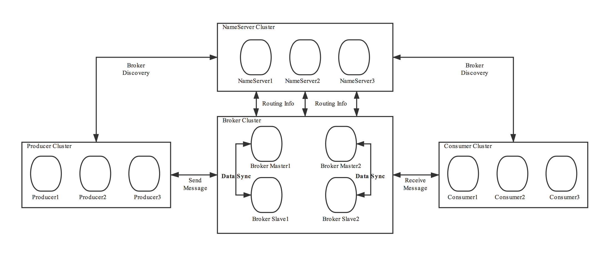

<!DOCTYPE html>

<!-- saved from url=(0046)https://kaiiiz.github.io/hexo-theme-book-demo/ -->

<html xmlns="http://www.w3.org/1999/xhtml">

<head>

    <head>

        <meta http-equiv="Content-Type" content="text/html; charset=UTF-8">

        <meta name="viewport" content="width=device-width, initial-scale=1, maximum-scale=1.0, user-scalable=no">

        <link rel="icon" href="/static/favicon.png">

        <title>23  RocketMQ客户端如何在集群中找到正确的节点？.md.html</title>

        <!-- Spectre.css framework -->

        <link rel="stylesheet" href="/static/index.css">

        <!-- theme css & js -->

        <meta name="generator" content="Hexo 4.2.0">

    </head>


<body>


<div class="book-container">

    <div class="book-sidebar">

        <div class="book-brand">

            <a href="/">

                

                <span>技术文章摘抄</span>

            </a>

        </div>

        <div class="book-menu uncollapsible">

            <ul class="uncollapsible">

                <li><a href="/" class="current-tab">首页</a></li>

            </ul>


            <ul class="uncollapsible">

                <li><a href="../">上一级</a></li>

            </ul>


            <ul class="uncollapsible">

                <li>


                    

                    <a href="/专栏/消息队列高手课/00 开篇词  优秀的程序员，你的技术栈中不能只有“增删改查”.md.html">00 开篇词  优秀的程序员，你的技术栈中不能只有“增删改查”.md.html</a>


                </li>

                <li>


                    

                    <a href="/专栏/消息队列高手课/00 预习  怎样更好地学习这门课？.md.html">00 预习  怎样更好地学习这门课？.md.html</a>


                </li>

                <li>


                    

                    <a href="/专栏/消息队列高手课/01  为什么需要消息队列？.md.html">01  为什么需要消息队列？.md.html</a>


                </li>

                <li>


                    

                    <a href="/专栏/消息队列高手课/02  该如何选择消息队列？.md.html">02  该如何选择消息队列？.md.html</a>


                </li>

                <li>


                    

                    <a href="/专栏/消息队列高手课/03  消息模型：主题和队列有什么区别？.md.html">03  消息模型：主题和队列有什么区别？.md.html</a>


                </li>

                <li>


                    

                    <a href="/专栏/消息队列高手课/04  如何利用事务消息实现分布式事务？.md.html">04  如何利用事务消息实现分布式事务？.md.html</a>


                </li>

                <li>


                    

                    <a href="/专栏/消息队列高手课/05  如何确保消息不会丢失.md.html">05  如何确保消息不会丢失.md.html</a>


                </li>

                <li>


                    

                    <a href="/专栏/消息队列高手课/06  如何处理消费过程中的重复消息？.md.html">06  如何处理消费过程中的重复消息？.md.html</a>


                </li>

                <li>


                    

                    <a href="/专栏/消息队列高手课/07  消息积压了该如何处理？.md.html">07  消息积压了该如何处理？.md.html</a>


                </li>

                <li>


                    

                    <a href="/专栏/消息队列高手课/08  答疑解惑（一）  网关如何接收服务端的秒杀结果？.md.html">08  答疑解惑（一）  网关如何接收服务端的秒杀结果？.md.html</a>


                </li>

                <li>


                    

                    <a href="/专栏/消息队列高手课/09  学习开源代码该如何入手？.md.html">09  学习开源代码该如何入手？.md.html</a>


                </li>

                <li>


                    

                    <a href="/专栏/消息队列高手课/10  如何使用异步设计提升系统性能？.md.html">10  如何使用异步设计提升系统性能？.md.html</a>


                </li>

                <li>


                    

                    <a href="/专栏/消息队列高手课/11  如何实现高性能的异步网络传输？.md.html">11  如何实现高性能的异步网络传输？.md.html</a>


                </li>

                <li>


                    

                    <a href="/专栏/消息队列高手课/12  序列化与反序列化：如何通过网络传输结构化的数据？.md.html">12  序列化与反序列化：如何通过网络传输结构化的数据？.md.html</a>


                </li>

                <li>


                    

                    <a href="/专栏/消息队列高手课/13  传输协议：应用程序之间对话的语言.md.html">13  传输协议：应用程序之间对话的语言.md.html</a>


                </li>

                <li>


                    

                    <a href="/专栏/消息队列高手课/14  内存管理：如何避免内存溢出和频繁的垃圾回收？.md.html">14  内存管理：如何避免内存溢出和频繁的垃圾回收？.md.html</a>


                </li>

                <li>


                    

                    <a href="/专栏/消息队列高手课/15  Kafka如何实现高性能IO？.md.html">15  Kafka如何实现高性能IO？.md.html</a>


                </li>

                <li>


                    

                    <a href="/专栏/消息队列高手课/16  缓存策略：如何使用缓存来减少磁盘IO？.md.html">16  缓存策略：如何使用缓存来减少磁盘IO？.md.html</a>


                </li>

                <li>


                    

                    <a href="/专栏/消息队列高手课/17  如何正确使用锁保护共享数据，协调异步线程？.md.html">17  如何正确使用锁保护共享数据，协调异步线程？.md.html</a>


                </li>

                <li>


                    

                    <a href="/专栏/消息队列高手课/18  如何用硬件同步原语（CAS）替代锁？.md.html">18  如何用硬件同步原语（CAS）替代锁？.md.html</a>


                </li>

                <li>


                    

                    <a href="/专栏/消息队列高手课/19  数据压缩：时间换空间的游戏.md.html">19  数据压缩：时间换空间的游戏.md.html</a>


                </li>

                <li>


                    

                    <a href="/专栏/消息队列高手课/20  RocketMQ Producer源码分析：消息生产的实现过程.md.html">20  RocketMQ Producer源码分析：消息生产的实现过程.md.html</a>


                </li>

                <li>


                    

                    <a href="/专栏/消息队列高手课/21  Kafka Consumer源码分析：消息消费的实现过程.md.html">21  Kafka Consumer源码分析：消息消费的实现过程.md.html</a>


                </li>

                <li>


                    

                    <a href="/专栏/消息队列高手课/22  Kafka和RocketMQ的消息复制实现的差异点在哪？.md.html">22  Kafka和RocketMQ的消息复制实现的差异点在哪？.md.html</a>


                </li>

                <li>


                    <a class="current-tab" href="/专栏/消息队列高手课/23  RocketMQ客户端如何在集群中找到正确的节点？.md.html">23  RocketMQ客户端如何在集群中找到正确的节点？.md.html</a>

                    


                </li>

                <li>


                    

                    <a href="/专栏/消息队列高手课/24  Kafka的协调服务ZooKeeper：实现分布式系统的“瑞士军刀”.md.html">24  Kafka的协调服务ZooKeeper：实现分布式系统的“瑞士军刀”.md.html</a>


                </li>

                <li>


                    

                    <a href="/专栏/消息队列高手课/25  RocketMQ与Kafka中如何实现事务？.md.html">25  RocketMQ与Kafka中如何实现事务？.md.html</a>


                </li>

                <li>


                    

                    <a href="/专栏/消息队列高手课/26  MQTT协议：如何支持海量的在线IoT设备.md.html">26  MQTT协议：如何支持海量的在线IoT设备.md.html</a>


                </li>

                <li>


                    

                    <a href="/专栏/消息队列高手课/27  Pulsar的存储计算分离设计：全新的消息队列设计思路.md.html">27  Pulsar的存储计算分离设计：全新的消息队列设计思路.md.html</a>


                </li>

                <li>


                    

                    <a href="/专栏/消息队列高手课/28  答疑解惑（二）：我的100元哪儿去了？.md.html">28  答疑解惑（二）：我的100元哪儿去了？.md.html</a>


                </li>

                <li>


                    

                    <a href="/专栏/消息队列高手课/29  流计算与消息（一）：通过Flink理解流计算的原理.md.html">29  流计算与消息（一）：通过Flink理解流计算的原理.md.html</a>


                </li>

                <li>


                    

                    <a href="/专栏/消息队列高手课/30  流计算与消息（二）：在流计算中使用Kafka链接计算任务.md.html">30  流计算与消息（二）：在流计算中使用Kafka链接计算任务.md.html</a>


                </li>

                <li>


                    

                    <a href="/专栏/消息队列高手课/31  动手实现一个简单的RPC框架（一）：原理和程序的结构.md.html">31  动手实现一个简单的RPC框架（一）：原理和程序的结构.md.html</a>


                </li>

                <li>


                    

                    <a href="/专栏/消息队列高手课/32  动手实现一个简单的RPC框架（二）：通信与序列化.md.html">32  动手实现一个简单的RPC框架（二）：通信与序列化.md.html</a>


                </li>

                <li>


                    

                    <a href="/专栏/消息队列高手课/33  动手实现一个简单的RPC框架（三）：客户端.md.html">33  动手实现一个简单的RPC框架（三）：客户端.md.html</a>


                </li>

                <li>


                    

                    <a href="/专栏/消息队列高手课/34  动手实现一个简单的RPC框架（四）：服务端.md.html">34  动手实现一个简单的RPC框架（四）：服务端.md.html</a>


                </li>

                <li>


                    

                    <a href="/专栏/消息队列高手课/35  答疑解惑（三）：主流消息队列都是如何存储消息的？.md.html">35  答疑解惑（三）：主流消息队列都是如何存储消息的？.md.html</a>


                </li>

                <li>


                    

                    <a href="/专栏/消息队列高手课/加餐  JMQ的Broker是如何异步处理消息的？.md.html">加餐  JMQ的Broker是如何异步处理消息的？.md.html</a>


                </li>

                <li>


                    

                    <a href="/专栏/消息队列高手课/结束语  程序员如何构建知识体系？.md.html">结束语  程序员如何构建知识体系？.md.html</a>


                </li>

            </ul>


        </div>

    </div>


    <div class="sidebar-toggle" onclick="sidebar_toggle()" onmouseover="add_inner()" onmouseleave="remove_inner()">

        <div class="sidebar-toggle-inner"></div>

    </div>


    <script>

        function add_inner() {

            let inner = document.querySelector('.sidebar-toggle-inner')

            inner.classList.add('show')

        }


        function remove_inner() {

            let inner = document.querySelector('.sidebar-toggle-inner')

            inner.classList.remove('show')

        }


        function sidebar_toggle() {

            let sidebar_toggle = document.querySelector('.sidebar-toggle')

            let sidebar = document.querySelector('.book-sidebar')

            let content = document.querySelector('.off-canvas-content')

            if (sidebar_toggle.classList.contains('extend')) { // show

                sidebar_toggle.classList.remove('extend')

                sidebar.classList.remove('hide')

                content.classList.remove('extend')

            } else { // hide

                sidebar_toggle.classList.add('extend')

                sidebar.classList.add('hide')

                content.classList.add('extend')

            }

        }


function open_sidebar() {

    let sidebar = document.querySelector('.book-sidebar')

    let overlay = document.querySelector('.off-canvas-overlay')

    sidebar.classList.add('show')

    overlay.classList.add('show')

}

function hide_canvas() {

    let sidebar = document.querySelector('.book-sidebar')

    let overlay = document.querySelector('.off-canvas-overlay')

    sidebar.classList.remove('show')

    overlay.classList.remove('show')

}


    </script>


    <div class="off-canvas-content">

        <div class="columns">

            <div class="column col-12 col-lg-12">

                <div class="book-navbar">

                    <!-- For Responsive Layout -->

                    <header class="navbar">

                        <section class="navbar-section">

                            <a onclick="open_sidebar()">

                                <i class="icon icon-menu"></i>

                            </a>

                        </section>

                    </header>

                </div>

                <div class="book-content" style="max-width: 960px; margin: 0 auto;

    overflow-x: auto;

    overflow-y: hidden;">

                    <div class="book-post">

                        <p id="tip" align="center"></p>

                        <div><h1>23  RocketMQ客户端如何在集群中找到正确的节点？</h1>

<p>你好，我是李玥。</p>

<p>我们在《[21 | RocketMQ Producer 源码分析：消息生产的实现过程]》这节课中，讲解 RocketMQ 的生产者启动流程时提到过，生产者只要配置一个接入地址，就可以访问整个集群，并不需要客户端配置每个 Broker 的地址。RocketMQ 会自动根据要访问的主题名称和队列序号，找到对应的 Broker 地址。如果 Broker 发生宕机，客户端还会自动切换到新的 Broker 节点上，这些对于用户代码来说都是透明的。</p>

<p>这些功能都是由 NameServer 协调 Broker 和客户端共同实现的，其中 NameServer 的作用是最关键的。</p>

<p>展开来讲，不仅仅是 RocketMQ，任何一个弹性分布式集群，都需要一个类似于 NameServer 服务，来帮助访问集群的客户端寻找集群中的节点，这个服务一般称为 NamingService。比如，像 Dubbo 这种 RPC 框架，它的注册中心就承担了 NamingService 的职责。在 Flink 中，则是 JobManager 承担了 NamingService 的职责。</p>

<p>也就是说，这种使用 NamingService 服务来协调集群的设计，在分布式集群的架构设计中，是一种非常通用的方法。你在学习这节课之后，不仅要掌握 RocketMQ 的 NameServer 是如何实现的，还要能总结出通用的 NamingService 的设计思想，并能应用于其他分布式系统的设计中。</p>

<p>这节课，我们一起来分析一下 NameServer 的源代码，看一下 NameServer 是如何协调集群中众多的 Broker 和客户端的。</p>

<h2>NameServer 是如何提供服务的？</h2>

<p>在 RocketMQ 中，NameServer 是一个独立的进程，为 Broker、生产者和消费者提供服务。NameServer 最主要的功能就是，为客户端提供寻址服务，协助客户端找到主题对应的 Broker 地址。此外，NameServer 还负责监控每个 Broker 的存活状态。</p>

<p>NameServer 支持只部署一个节点，也支持部署多个节点组成一个集群，这样可以避免单点故障。在集群模式下，NameServer 各节点之间是不需要任何通信的，也不会通过任何方式互相感知，每个节点都可以独立提供全部服务。</p>

<p>我们一起通过这个图来看一下，在 RocketMQ 集群中，NameServer 是如何配合 Broker、生产者和消费者一起工作的。这个图来自<a href="https://github.com/apache/rocketmq/tree/master/docs">RocketMQ 的官方文档</a>。</p>

<p></p>

<p>每个 Broker 都需要和所有的 NameServer 节点进行通信。当 Broker 保存的 Topic 信息发生变化的时候，它会主动通知所有的 NameServer 更新路由信息，为了保证数据一致性，Broker 还会定时给所有的 NameServer 节点上报路由信息。这个上报路由信息的 RPC 请求，也同时起到 Broker 与 NameServer 之间的心跳作用，NameServer 依靠这个心跳来确定 Broker 的健康状态。</p>

<p>因为每个 NameServer 节点都可以独立提供完整的服务，所以，对于客户端来说，包括生产者和消费者，只需要选择任意一个 NameServer 节点来查询路由信息就可以了。客户端在生产或消费某个主题的消息之前，会先从 NameServer 上查询这个主题的路由信息，然后根据路由信息获取到当前主题和队列对应的 Broker 物理地址，再连接到 Broker 节点上进行生产或消费。</p>

<p>如果 NameServer 检测到与 Broker 的连接中断了，NameServer 会认为这个 Broker 不再能提供服务。NameServer 会立即把这个 Broker 从路由信息中移除掉，避免客户端连接到一个不可用的 Broker 上去。而客户端在与 Broker 通信失败之后，会重新去 NameServer 上拉取路由信息，然后连接到其他 Broker 上继续生产或消费消息，这样就实现了自动切换失效 Broker 的功能。</p>

<p>此外，NameServer 还提供一个类似 Redis 的 KV 读写服务，这个不是主要的流程，我们不展开讲。</p>

<p>接下来我带你一起分析 NameServer 的源代码，看一下这些服务都是如何实现的。</p>

<h2>NameServer 的总体结构</h2>

<p>由于 NameServer 的结构非常简单，排除 KV 读写相关的类之后，一共只有 6 个类，这里面直接给出这 6 个类的说明：</p>

<ul>

<li><strong>NamesrvStartup</strong>：程序入口。</li>

<li><strong>NamesrvController</strong>：NameServer 的总控制器，负责所有服务的生命周期管理。</li>

<li><strong>RouteInfoManager</strong>：NameServer 最核心的实现类，负责保存和管理集群路由信息。</li>

<li><strong>BrokerHousekeepingService</strong>：监控 Broker 连接状态的代理类。</li>

<li><strong>DefaultRequestProcessor</strong>：负责处理客户端和 Broker 发送过来的 RPC 请求的处理器。</li>

<li><strong>ClusterTestRequestProcessor</strong>：用于测试的请求处理器。</li>

</ul>

<p>RouteInfoManager 这个类中保存了所有的路由信息，这些路由信息都是保存在内存中，并且没有持久化的。在代码中，这些路由信息保存在 RouteInfoManager 的几个成员变量中：</p>

<pre><code>public class BrokerData implements Comparable&lt;BrokerData&gt; {

  // ...

  private final HashMap&lt;String/* topic */, List&lt;QueueData&gt;&gt; topicQueueTable;

  private final HashMap&lt;String/* brokerName */, BrokerData&gt; brokerAddrTable;

  private final HashMap&lt;String/* clusterName */, Set&lt;String/* brokerName */&gt;&gt; clusterAddrTable;

  private final HashMap&lt;String/* brokerAddr */, BrokerLiveInfo&gt; brokerLiveTable;

  private final HashMap&lt;String/* brokerAddr */, List&lt;String&gt;/* Filter Server */&gt; filterServerTable;

  // ...

}

</code></pre>

<p>以上代码中的这 5 个 Map 对象，保存了集群所有的 Broker 和主题的路由信息。</p>

<p>topicQueueTable 保存的是主题和队列信息，其中每个队列信息对应的类 QueueData 中，还保存了 brokerName。需要注意的是，这个 brokerName 并不真正是某个 Broker 的物理地址，它对应的一组 Broker 节点，包括一个主节点和若干个从节点。</p>

<p>brokerAddrTable 中保存了集群中每个 brokerName 对应 Broker 信息，每个 Broker 信息用一个 BrokerData 对象表示：</p>

<pre><code>public class BrokerData implements Comparable&lt;BrokerData&gt; {

    private String cluster;

    private String brokerName;

    private HashMap&lt;Long/* brokerId */, String/* broker address */&gt; brokerAddrs;

    // ...

}

</code></pre>

<p>BrokerData 中保存了集群名称 cluster，brokerName 和一个保存 Broker 物理地址的 Map：brokerAddrs，它的 Key 是 BrokerID，Value 就是这个 BrokerID 对应的 Broker 的物理地址。</p>

<p>下面这三个 map 相对没那么重要，简单说明如下：</p>

<ul>

<li>brokerLiveTable 中，保存了每个 Broker 当前的动态信息，包括心跳更新时间，路由数据版本等等。</li>

<li>clusterAddrTable 中，保存的是集群名称与 BrokerName 的对应关系。</li>

<li>filterServerTable 中，保存了每个 Broker 对应的消息过滤服务的地址，用于服务端消息过滤。</li>

</ul>

<p>可以看到，在 NameServer 的 RouteInfoManager 中，主要的路由信息就是由 topicQueueTable 和 brokerAddrTable 这两个 Map 来保存的。</p>

<p>在了解了总体结构和数据结构之后，我们再来看一下实现的流程。</p>

<h2>NameServer 如何处理 Broker 注册的路由信息？</h2>

<p>首先来看一下，NameServer 是如何处理 Broker 注册的路由信息的。</p>

<p>NameServer 处理 Broker 和客户端所有 RPC 请求的入口方法是：“DefaultRequestProcessor#processRequest”，其中处理 Broker 注册请求的代码如下：</p>

<pre><code>public class DefaultRequestProcessor implements NettyRequestProcessor {

    // ...

    @Override

    public RemotingCommand processRequest(ChannelHandlerContext ctx,

        RemotingCommand request) throws RemotingCommandException {

        // ...

        switch (request.getCode()) {

            // ...

            case RequestCode.REGISTER_BROKER:

                Version brokerVersion = MQVersion.value2Version(request.getVersion());

                if (brokerVersion.ordinal() &gt;= MQVersion.Version.V3_0_11.ordinal()) {

                    return this.registerBrokerWithFilterServer(ctx, request);

                } else {

                    return this.registerBroker(ctx, request);

                }

            // ...

            default:

                break;

        }

        return null;

    }

    // ...

}

</code></pre>

<p>这是一个非常典型的处理 Request 的路由分发器，根据 request.getCode() 来分发请求到对应的处理器中。Broker 发给 NameServer 注册请求的 Code 为 REGISTER_BROKER，在代码中根据 Broker 的版本号不同，分别有两个不同的处理实现方法：“registerBrokerWithFilterServer”和&quot;registerBroker&quot;。这两个方法实现的流程是差不多的，实际上都是调用了&quot;RouteInfoManager#registerBroker&quot;方法，我们直接看这个方法的代码：</p>

<pre><code>public RegisterBrokerResult registerBroker(

    final String clusterName,

    final String brokerAddr,

    final String brokerName,

    final long brokerId,

    final String haServerAddr,

    final TopicConfigSerializeWrapper topicConfigWrapper,

    final List&lt;String&gt; filterServerList,

    final Channel channel) {

    RegisterBrokerResult result = new RegisterBrokerResult();

    try {

        try {

            // 加写锁，防止并发修改数据

            this.lock.writeLock().lockInterruptibly();

 

            // 更新 clusterAddrTable

            Set&lt;String&gt; brokerNames = this.clusterAddrTable.get(clusterName);

            if (null == brokerNames) {

                brokerNames = new HashSet&lt;String&gt;();

                this.clusterAddrTable.put(clusterName, brokerNames);

            }

            brokerNames.add(brokerName);

 

            // 更新 brokerAddrTable

            boolean registerFirst = false;

 

            BrokerData brokerData = this.brokerAddrTable.get(brokerName);

            if (null == brokerData) {

                registerFirst = true; // 标识需要先注册

                brokerData = new BrokerData(clusterName, brokerName, new HashMap&lt;Long, String&gt;());

                this.brokerAddrTable.put(brokerName, brokerData);

            }

            Map&lt;Long, String&gt; brokerAddrsMap = brokerData.getBrokerAddrs();

            // 更新 brokerAddrTable 中的 brokerData

            Iterator&lt;Entry&lt;Long, String&gt;&gt; it = brokerAddrsMap.entrySet().iterator();

            while (it.hasNext()) {

                Entry&lt;Long, String&gt; item = it.next();

                if (null != brokerAddr &amp;&amp; brokerAddr.equals(item.getValue()) &amp;&amp; brokerId != item.getKey()) {

                    it.remove();

                }

            }

 

            // 如果是新注册的 Master Broker，或者 Broker 中的路由信息变了，需要更新 topicQueueTable

            String oldAddr = brokerData.getBrokerAddrs().put(brokerId, brokerAddr);

            registerFirst = registerFirst || (null == oldAddr);

 

            if (null != topicConfigWrapper

                &amp;&amp; MixAll.MASTER_ID == brokerId) {

                if (this.isBrokerTopicConfigChanged(brokerAddr, topicConfigWrapper.getDataVersion())

                    || registerFirst) {

                    ConcurrentMap&lt;String, TopicConfig&gt; tcTable =

                        topicConfigWrapper.getTopicConfigTable();

                    if (tcTable != null) {

                        for (Map.Entry&lt;String, TopicConfig&gt; entry : tcTable.entrySet()) {

                            this.createAndUpdateQueueData(brokerName, entry.getValue());

                        }

                    }

                }

            }

 

            // 更新 brokerLiveTable

            BrokerLiveInfo prevBrokerLiveInfo = this.brokerLiveTable.put(brokerAddr,

                new BrokerLiveInfo(

                    System.currentTimeMillis(),

                    topicConfigWrapper.getDataVersion(),

                    channel,

                    haServerAddr));

            if (null == prevBrokerLiveInfo) {

                log.info(&quot;new broker registered, {} HAServer: {}&quot;, brokerAddr, haServerAddr);

            }

 

            // 更新 filterServerTable

            if (filterServerList != null) {

                if (filterServerList.isEmpty()) {

                    this.filterServerTable.remove(brokerAddr);

                } else {

                    this.filterServerTable.put(brokerAddr, filterServerList);

                }

            }

 

            // 如果是 Slave Broker，需要在返回的信息中带上 master 的相关信息

            if (MixAll.MASTER_ID != brokerId) {

                String masterAddr = brokerData.getBrokerAddrs().get(MixAll.MASTER_ID);

                if (masterAddr != null) {

                    BrokerLiveInfo brokerLiveInfo = this.brokerLiveTable.get(masterAddr);

                    if (brokerLiveInfo != null) {

                        result.setHaServerAddr(brokerLiveInfo.getHaServerAddr());

                        result.setMasterAddr(masterAddr);

                    }

                }

            }

        } finally {

            // 释放写锁

            this.lock.writeLock().unlock();

        }

    } catch (Exception e) {

        log.error(&quot;registerBroker Exception&quot;, e);

    }

 

    return result;

}

</code></pre>

<p>上面这段代码比较长，但总体结构很简单，就是根据 Broker 请求过来的路由信息，依次对比并更新 clusterAddrTable、brokerAddrTable、topicQueueTable、brokerLiveTable 和 filterServerTable 这 5 个保存集群信息和路由信息的 Map 对象中的数据。</p>

<p>另外，在 RouteInfoManager 中，这 5 个 Map 作为一个整体资源，使用了一个读写锁来做并发控制，避免并发更新和更新过程中读到不一致的数据问题。这个读写锁的使用方法，和我们在之前的课程《[17 | 如何正确使用锁保护共享数据，协调异步线程？]》中讲到的方法是一样的。</p>

<h2>客户端如何寻找 Broker？</h2>

<p>下面我们来看一下，NameServer 如何帮助客户端来找到对应的 Broker。对于客户端来说，无论是生产者还是消费者，通过主题来寻找 Broker 的流程是一样的，使用的也是同一份实现。客户端在启动后，会启动一个定时器，定期从 NameServer 上拉取相关主题的路由信息，然后缓存在本地内存中，在需要的时候使用。每个主题的路由信息用一个 TopicRouteData 对象来表示：</p>

<pre><code>public class TopicRouteData extends RemotingSerializable {

    // ...

    private List&lt;QueueData&gt; queueDatas;

    private List&lt;BrokerData&gt; brokerDatas;

    // ...

}

</code></pre>

<p>其中，queueDatas 保存了主题中的所有队列信息，brokerDatas 中保存了主题相关的所有 Broker 信息。客户端选定了队列后，可以在对应的 QueueData 中找到对应的 BrokerName，然后用这个 BrokerName 找到对应的 BrokerData 对象，最终找到对应的 Master Broker 的物理地址。这部分代码在 org.apache.rocketmq.client.impl.factory.MQClientInstance 这个类中，你可以自行查看。</p>

<p>下面我们看一下在 NameServer 中，是如何实现根据主题来查询 TopicRouteData 的。</p>

<p>NameServer 处理客户端请求和处理 Broker 请求的流程是一样的，都是通过路由分发器将请求分发的对应的处理方法中，我们直接看具体的实现方法 RouteInfoManager#pickupTopicRouteData：</p>

<pre><code>public TopicRouteData pickupTopicRouteData(final String topic) {

 

    // 初始化返回数据 topicRouteData

    TopicRouteData topicRouteData = new TopicRouteData();

    boolean foundQueueData = false;

    boolean foundBrokerData = false;

    Set&lt;String&gt; brokerNameSet = new HashSet&lt;String&gt;();

    List&lt;BrokerData&gt; brokerDataList = new LinkedList&lt;BrokerData&gt;();

    topicRouteData.setBrokerDatas(brokerDataList);

 

    HashMap&lt;String, List&lt;String&gt;&gt; filterServerMap = new HashMap&lt;String, List&lt;String&gt;&gt;();

    topicRouteData.setFilterServerTable(filterServerMap);

 

    try {

        try {

 

            // 加读锁

            this.lock.readLock().lockInterruptibly();

 

            // 先获取主题对应的队列信息

            List&lt;QueueData&gt; queueDataList = this.topicQueueTable.get(topic);

            if (queueDataList != null) {

 

                // 把队列信息返回值中

                topicRouteData.setQueueDatas(queueDataList);

                foundQueueData = true;

 

                // 遍历队列，找出相关的所有 BrokerName

                Iterator&lt;QueueData&gt; it = queueDataList.iterator();

                while (it.hasNext()) {

                    QueueData qd = it.next();

                    brokerNameSet.add(qd.getBrokerName());

                }

 

                // 遍历这些 BrokerName，找到对应的 BrokerData，并写入返回结果中

                for (String brokerName : brokerNameSet) {

                    BrokerData brokerData = this.brokerAddrTable.get(brokerName);

                    if (null != brokerData) {

                        BrokerData brokerDataClone = new BrokerData(brokerData.getCluster(), brokerData.getBrokerName(), (HashMap&lt;Long, String&gt;) brokerData

                            .getBrokerAddrs().clone());

                        brokerDataList.add(brokerDataClone);

                        foundBrokerData = true;

                        for (final String brokerAddr : brokerDataClone.getBrokerAddrs().values()) {

                            List&lt;String&gt; filterServerList = this.filterServerTable.get(brokerAddr);

                            filterServerMap.put(brokerAddr, filterServerList);

                        }

                    }

                }

            }

        } finally {

            // 释放读锁

            this.lock.readLock().unlock();

        }

    } catch (Exception e) {

        log.error(&quot;pickupTopicRouteData Exception&quot;, e);

    }

 

    log.debug(&quot;pickupTopicRouteData {} {}&quot;, topic, topicRouteData);

 

    if (foundBrokerData &amp;&amp; foundQueueData) {

        return topicRouteData;

    }

 

    return null;

}

</code></pre>

<p>这个方法的实现流程是这样的：</p>

<ol>

<li>初始化返回的 topicRouteData 后，获取读锁。</li>

<li>在 topicQueueTable 中获取主题对应的队列信息，并写入返回结果中。</li>

<li>遍历队列，找出相关的所有 BrokerName。</li>

<li>遍历这些 BrokerName，从 brokerAddrTable 中找到对应的 BrokerData，并写入返回结果中。</li>

<li>释放读锁并返回结果。</li>

</ol>

<h2>小结</h2>

<p>这节课我们一起分析了 RocketMQ NameServer 的源代码，NameServer 在集群中起到的一个核心作用就是，为客户端提供路由信息，帮助客户端找到对应的 Broker。</p>

<p>每个 NameServer 节点上都保存了集群所有 Broker 的路由信息，可以独立提供服务。Broker 会与所有 NameServer 节点建立长连接，定期上报 Broker 的路由信息。客户端会选择连接某一个 NameServer 节点，定期获取订阅主题的路由信息，用于 Broker 寻址。</p>

<p>NameServer 的所有核心功能都是在 RouteInfoManager 这个类中实现的，这类中使用了几个 Map 来在内存中保存集群中所有 Broker 的路由信息。</p>

<p>我们还一起分析了 RouteInfoManager 中的两个比较关键的方法：注册 Broker 路由信息的方法 registerBroker，以及查询 Broker 路由信息的方法 pickupTopicRouteData。</p>

<p>建议你仔细读一下这两个方法的代码，结合保存路由信息的几个 Map 的数据结构，体会一下 RocketMQ NameServer 这种简洁的设计。</p>

<p>把以上的这些 NameServer 的设计和实现方法抽象一下，我们就可以总结出通用的 NamingService 的设计思想。</p>

<p>NamingService 负责保存集群内所有节点的路由信息，NamingService 本身也是一个小集群，由多个 NamingService 节点组成。这里我们所说的“路由信息”也是一种通用的抽象，含义是：“客户端需要访问的某个特定服务在哪个节点上”。</p>

<p>集群中的节点主动连接 NamingService 服务，注册自身的路由信息。给客户端提供路由寻址服务的方式可以有两种，一种是客户端直接连接 NamingService 服务查询路由信息，另一种是，客户端连接集群内任意节点查询路由信息，节点再从自身的缓存或者从 NamingService 上进行查询。</p>

<p>掌握了以上这些 NamingService 的设计方法，将会非常有助于你理解其他分布式系统的架构，当然，你也可以把这些方法应用到分布式系统的设计中去。</p>

</div>

                    </div>

                    <div>

                        <div style="float: left">

                            <a href="/专栏/消息队列高手课/22  Kafka和RocketMQ的消息复制实现的差异点在哪？.md.html">上一页</a>

                        </div>

                        <div style="float: right">

                            <a href="/专栏/消息队列高手课/24  Kafka的协调服务ZooKeeper：实现分布式系统的“瑞士军刀”.md.html">下一页</a>

                        </div>

                    </div>


                </div>

            </div>

        </div>

    </div>


    <a class="off-canvas-overlay" onclick="hide_canvas()"></a>

</div>

<script defer src="https://static.cloudflareinsights.com/beacon.min.js/v652eace1692a40cfa3763df669d7439c1639079717194" integrity="sha512-Gi7xpJR8tSkrpF7aordPZQlW2DLtzUlZcumS8dMQjwDHEnw9I7ZLyiOj/6tZStRBGtGgN6ceN6cMH8z7etPGlw==" data-cf-beacon='{"rayId":"709979789c243cfa","version":"2021.12.0","r":1,"token":"1f5d475227ce4f0089a7cff1ab17c0f5","si":100}' crossorigin="anonymous"></script>

</body>

<!-- Global site tag (gtag.js) - Google Analytics -->

<script async src="https://www.googletagmanager.com/gtag/js?id=G-NPSEEVD756"></script>

<script>

    window.dataLayer = window.dataLayer || [];


    function gtag() {

        dataLayer.push(arguments);

    }


    gtag('js', new Date());

    gtag('config', 'G-NPSEEVD756');

    var path = window.location.pathname

    var cookie = getCookie("lastPath");

    console.log(path)

    if (path.replace("/", "") === "") {

        if (cookie.replace("/", "") !== "") {

            console.log(cookie)

            document.getElementById("tip").innerHTML = "<a href='" + cookie + "'>跳转到上次进度</a>"

        }

    } else {

        setCookie("lastPath", path)

    }


    function setCookie(cname, cvalue) {

        var d = new Date();

        d.setTime(d.getTime() + (180 * 24 * 60 * 60 * 1000));

        var expires = "expires=" + d.toGMTString();

        document.cookie = cname + "=" + cvalue + "; " + expires + ";path = /";

    }


    function getCookie(cname) {

        var name = cname + "=";

        var ca = document.cookie.split(';');

        for (var i = 0; i < ca.length; i++) {

            var c = ca[i].trim();

            if (c.indexOf(name) === 0) return c.substring(name.length, c.length);

        }

        return "";

    }


</script>


</html>

